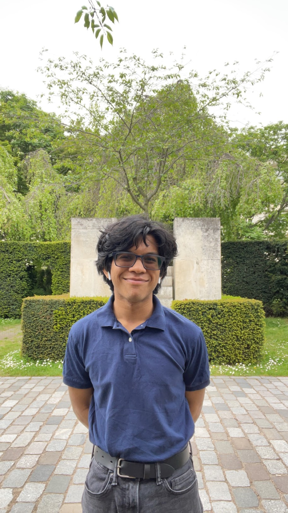

hello! i'm mihir. i study cs and business at unc.
i'm looking for opportunities in product, policy, strategy, and finance.
some of the projects i'm working on:
newslettr
is an rss aggregator that helps limit time spent reading the news.
docs are on my
github
.
